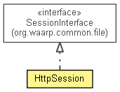

org.waarp.gateway.kernel.session
Class HttpSession
java.lang.Object
 org.waarp.gateway.kernel.session.HttpSession
org.waarp.gateway.kernel.session.HttpSession
- All Implemented Interfaces:
- org.waarp.common.file.SessionInterface
public class HttpSession
- extends Object
- implements org.waarp.common.file.SessionInterface

- Author:
- Frederic Bregier
HttpSession
public HttpSession()
setHttpAuth
public void setHttpAuth(HttpAuthInterface httpAuth)
- Parameters:
httpAuth - the httpAuth to set
getDir
public org.waarp.common.file.DirInterface getDir()
- Specified by:
getDir in interface org.waarp.common.file.SessionInterface
getAuth
public HttpAuthInterface getAuth()
- Specified by:
getAuth in interface org.waarp.common.file.SessionInterface
clear
public void clear()
- Specified by:
clear in interface org.waarp.common.file.SessionInterface
getBlockSize
public int getBlockSize()
- Specified by:
getBlockSize in interface org.waarp.common.file.SessionInterface
getFileParameter
public org.waarp.common.file.FileParameterInterface getFileParameter()
- Specified by:
getFileParameter in interface org.waarp.common.file.SessionInterface
getRestart
public org.waarp.common.file.Restart getRestart()
- Specified by:
getRestart in interface org.waarp.common.file.SessionInterface
getUniqueExtension
public String getUniqueExtension()
- Specified by:
getUniqueExtension in interface org.waarp.common.file.SessionInterface
getCurrentCommand
public HttpPage.PageRole getCurrentCommand()
- Returns:
- the currentCommand
setCurrentCommand
public void setCurrentCommand(HttpPage.PageRole currentCommand)
- Parameters:
currentCommand - the currentCommand to set
getCookieSession
public String getCookieSession()
- Returns:
- the cookieSession
setCookieSession
public void setCookieSession(String cookieSession)
- Parameters:
cookieSession - the cookieSession to set
getLogid
public long getLogid()
- Returns:
- the logid
setLogid
public void setLogid(long logid)
- Parameters:
logid - the logid to set
getFilename
public String getFilename()
- Returns:
- the filename
setFilename
public void setFilename(String filename)
- Parameters:
filename - the filename to set
toString
public String toString()
- Overrides:
toString in class Object
Copyright © 2009-2012 Waarp. All Rights Reserved.